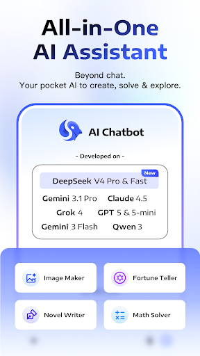

DeepThink 付费账本：这笔 AI 聚合的钱到底值不值
从免费版能用什么、付费版多了什么说起，分轻度主力重度三档算账，再列替代方案，最后明确告诉你哪类人闭眼前冲。
它到底值不值得掏钱？这是我打开DeepThink官网那天就摆在桌上的问题。一个 AI 聚合 App，把 Claude 3.5、DeepSeek R1、Gemini 这些模型揉进一个界面里——听起来很美，但"聚合"这事儿从诞生起就伴随着一个尴尬：你到底是在为"省切换的时间"付费，还是在为"本来就用不到的模型"付费？
我用了三个星期，免费版和付费版都跑过一遍。这篇账我给你掰碎了算。
先看免费版给了什么
免费版的定位很明确：让你跑起来，不让你跑爽。
模型选择器在顶部下拉，Claude 3.5、DeepSeek V3、R1、Gemini 这些主流模型都在列表里——别高兴太早，每个模型都有每日请求上限。不是"每月 N 次"那种宽松配额，是"每一天你发了多少次就停"。轻度问答偶尔用用还行，但你要是拿它梳理一篇长文档，刚让它确认完主题再问两层细节，配额就见底了，剩下的时间只能等第二天重置。
图片能力免费版也有，但有两个紧箍咒：一是上传图片的分辨率被压缩过，图表解读时小字会糊；二是数学求解器这个独立快捷入口，免费版只给每两天一次的试用额度。拍照发道题能出步骤，但你要是连续刷五道微积分，第三道就弹付费提示。

聊天记录能保存，但免费版的侧边菜单里找不到「导出备份」按钮——这一点藏得挺鸡贼。你真要清缓存或换手机，之前的对话就跟着没了，还得从deepthink下载重新来一遍，挺麻烦。
付费版多了什么
付费版的升级点不像其他工具那样堆一堆花哨功能，就是在免费版的紧箍咒上松螺丝：
配额放开是最直接的。每日请求数从几十级跳到几百级，我是从deepthink文档学来的长文档三步法（确认理解 → 分层深入 → 产出成果）可以一口气跑完不用等第二天。而且不同模型的配额是分开计的——Claude 用满了切 R1，不互相占。
图片能力解锁：原图上传不压缩，数学求解器无限次，还多了图片生成的额度。拍照提问这个功能本身就是 DeepThink 的强项——Gemini 2.0/3 Pro 的多模态能力在手机端能直接用，付费版解锁后图表解读的准确性肉眼可见地提升，之前免费版糊掉的论文图表小字能识别了。
备份与同步：付费版才能导出聊天记录、才能在多设备间同步（如果你有平板的话）。这个点看起来不重要，但你真的在免费版攒了两周的对话然后清缓存误删过一次，就知道它值多少钱了。
还有一些细碎的升级：去广告（免费版切模型偶尔会弹广告）、深色模式的完整解锁、优先队列（高峰期你的请求会比免费用户先处理）。
算三档人的账
轻度用：每天不超过 5 次
典型场景：偶尔拍一道作业题、偶尔让它翻译一段短文、偶尔问个技术问题。
免费版够不够？够。一天几次问答加一次拍照，免费配额覆盖得到。数学求解器每两天一次，你要是真的只偶尔用，轮换着来也不是不行。
付费后每单位时间成本多少？按订阅价算（具体数字各渠道有浮动，折算成日费大约一块多），你每天只用一次，相当于为每次问答多掏一块钱。不划算。
主力用：每天 15~30 次，有长文档需求
典型场景：每天整理一两篇论文或报告、一天刷七八道数学题、工作中需要多模型对比同一个问题的回答。
免费版够不够？勉强能跑但必卡壳。你跑长文档三步法，第一步确认理解 + 第二步分层深入（宏观中观微观各问一遍），六七次请求就出去了，再要产出摘要或表格，配额见底。数学求解器每天用三次的话，免费版根本不够。
付费后每单位时间成本多少？日费还是那块多，但你每天用 20 次，相当于每次请求多掏五六分钱——比你手动切换三个模型省下来的时间值钱多了。一个小时省二十分钟，一天下来那点订阅费早就赚回来了。
重度用：每天 50+ 次，多模型并行对比
典型场景：做内容创作需要多模型草稿、研究工作需要同时比对不同模型对同一问题的处理、或者你本身就是个 AI 发烧友。
免费版够不够？完全不够。每日请求上限撑不过两小时，数学求解器和图片生成更是沾不到。
付费后每单位时间成本多少？你每天用 50 次以上，每次分摊下来才两三分钱。这种用量下订阅费几乎可以忽略——真正省的是"我不用在手机上装三四个 App 切来切去"这件事本身的精力成本。
替代方案：不付这笔钱的路
如果你觉得订阅费不值得，还有三条路：
路一：各模型单独装官方 App。Claude 有自己的 App，DeepSeek 有自己的，Gemini 也有。每个都免费，各算各的配额。代价是你要装三四个 App，每次用之前想"这问题适合哪个模型"，然后切过去。重度用的人会烦，轻度用的人反而觉得这样更清爽——因为你不需要为聚合的便利买单。
路二：降低使用频率。把"每天跑一遍长文档梳理"改成"攒三天的周末一次性跑完"，数学题攒够五天再集中刷。免费配额虽然每天有限，但攒几天再用的话，主力用的人也能凑合。代价是时效性——工作中急需的时候等不了，周末一次性跑又容易忘。
路三：网页端凑活。电脑上开浏览器分别进各模型的官网，不用装 App 也不占手机配额。代价是手机端的移动性没了，截图拍照的麻烦也多了一层。
结论：三秒对号入座
- 闭眼付：主力用到重度用，每天 15 次以上、有长文档或多模型需求的。这笔订阅费的时间回报比你想象的大。
- 再等等：轻度到主力的边界人群（每天 8~12 次）。先用免费版跑两周，哪天真的因为配额卡到难受了再付——别预支这个便利。
- 永远不用付：每天 5 次以内、或者你本来就只用某一个模型的。单独装那个模型的官方 App 就行，聚合对你来说反而是个额外开销。
还有一个补充：如果你是安卓老用户（Android 7.0 以上），体积 17MB 到 80MB+ 的安装包本身不算大，但建议预留 200MB 运行空间——免费版没这个问题，付费版因为缓存更多，空间预留得不够的话后期会闪退还得清数据，别到时候才发现这个隐性成本。这套应用的资料我同步维护了三个仓库，GitHub是主仓库走得最勤，国内朋友用Gitee或GitCode拉取速度更稳。